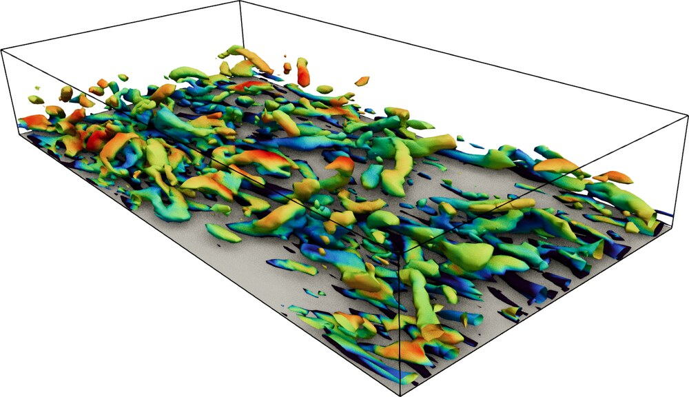
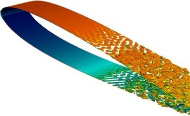
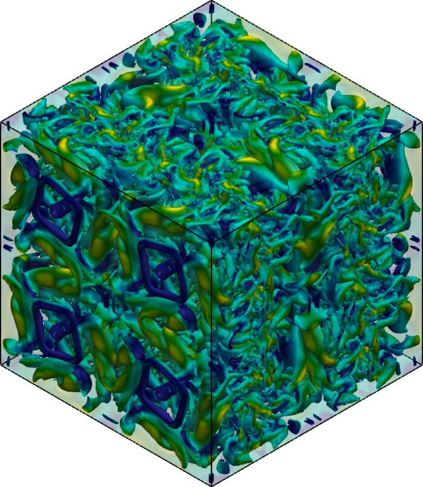
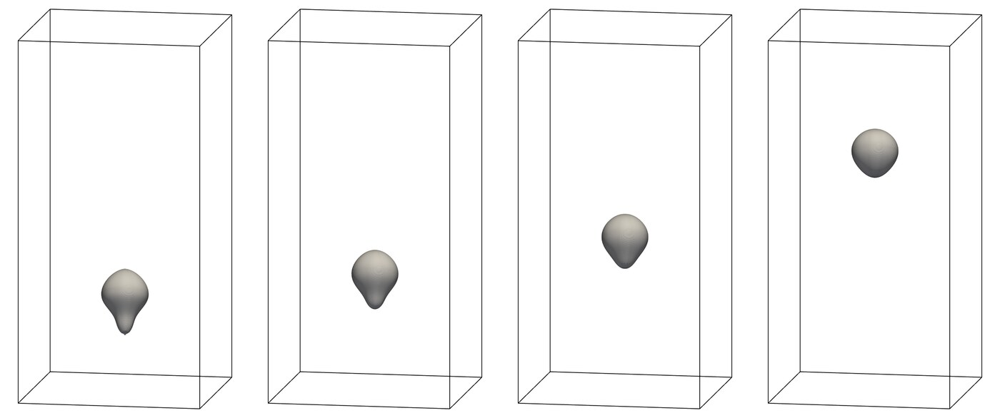
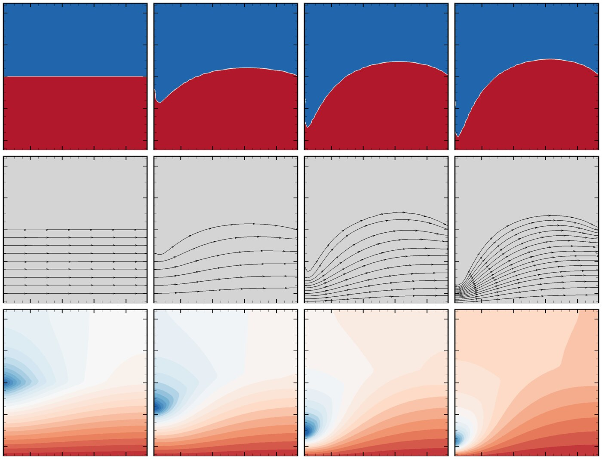

Vortex shedding behind a circular cylinder at Re = 300, computed with a Helmholtz–Leray projection method with variational multiscale stabilization. [arXiv]

Vortical structures in turbulent channel flow at a friction Reynolds number of 395, computed with the semi-implicit variational multiscale formulation with exact adjoint linearization. [arXiv]

Coherent vortical structures in turbulent flow over a NACA0012 airfoil at a chord Reynolds number of 6 million, computed with the same formulation. [arXiv]

Q-criterion isosurfaces of the decaying Taylor–Green vortex at Re = 1600, colored by velocity magnitude, at t = 0 (left), t = 15 (center), and t = 20 (right), showing the initial cellular structure, the developed turbulent state, and the decaying small-scale structures. Computed with the Helmholtz–Leray projection method with variational multiscale stabilization. [arXiv]

Time sequence (left to right) of a non-Newtonian silicone ink droplet rising through perfluorodecalin, simulated with a Cahn–Hilliard–Navier–Stokes framework and a neural-network viscosity closure. [arXiv]

Liquid metal free surface (top, time increasing left to right) with the corresponding current density streamlines (middle) and magnetic field (bottom) in a model fusion liquid wall problem. Electric current injected from the Z-pinch plasma column passes through the liquid metal, and the resulting Lorentz force deforms the free surface. Computed with a Maxwell–Navier–Stokes solver. [arXiv]
My research sits at the intersection of computational fluid dynamics, multiphysics modeling, and
scientific machine learning. I develop numerical solvers and data-driven models for turbulent,
multiphase, and electrically driven flows, including electrokinetic transport governed by the
Nernst–Planck equations and liquid metal flows coupled to Maxwell's equations, with applications
spanning aerodynamics, additive manufacturing, electrochemical systems, and fusion energy. I use
high-performance computing to carry these simulations to realistic scales.
At the Translational AI Center, my work centers on variational multiscale finite element methods for
the incompressible Navier–Stokes equations, including a semi-implicit formulation with exact
adjoint linearization and a VMS-stabilized Helmholtz–Leray projection method, validated on
turbulent channel, airfoil, cylinder wake, and Taylor–Green vortex flows. In parallel, I develop
neural-network constitutive closures for non-Newtonian multiphase flows within a
Cahn–Hilliard–Navier–Stokes framework, and couple the Nernst–Planck equations
with multiphase flow to model electrokinetic transport in electrochemical systems. Earlier work at
Virginia Tech developed Maxwell–Navier–Stokes solvers for liquid metal free surface
dynamics in fusion liquid walls.
Research Projects
May 2026 Translational AI Center
VMS-Stabilized Projection Method for Incompressible Flows
Implemented the finite element solver for a residual-based variational multiscale (VMS) stabilization of an incremental Helmholtz–Leray projection method, which replaces the coupled velocity–pressure saddle-point problem with a velocity predictor, a pressure Poisson equation, and a velocity projection, and carried out the benchmark simulations validating it.
Simulated flow past a circular cylinder at Reynolds numbers from 100 to 300 on unstructured meshes, reproducing the onset of vortex shedding and obtaining drag coefficients and Strouhal numbers in close agreement with published values.
Simulated the Taylor–Green vortex at a Reynolds number of 1600 on meshes up to 2563, with kinetic energy decay and dissipation rate approaching the pseudo-spectral reference under mesh refinement and the energy spectrum following the expected inertial-range slope.
Compared the projection and monolithic VMS formulations, showing that omitting the pressure fine scale reduces excess modeled dissipation, and that the projection scheme cuts solve time per step by a factor of 1.3 to 2.7 for the Taylor–Green vortex across the three mesh resolutions.
Dec 2025 Translational AI Center
Turbulent Channel and Airfoil Flow Simulations
Carried out the three-dimensional turbulent flow simulations validating a semi-implicit, residual-based variational multiscale (VMS) finite element formulation of the incompressible Navier–Stokes equations, in which an Oseen-type linearization of convection yields an exact adjoint and removes spatial derivatives of the fine-scale velocity from the weak form.
Simulated turbulent channel flow at a friction Reynolds number of 395 on a wall-clustered mesh, obtaining mean velocity and velocity fluctuation profiles that closely match published residual-based VMS results at the same resolution.
Simulated three-dimensional turbulent flow over a NACA0012 airfoil at a chord Reynolds number of 6 million on a mesh of about 2 million nodes, with surface pressure coefficients matching experimental measurements.
Benchmarked the linear and fully implicit nonlinear VMS formulations on these problems, showing that the single linear solve per time step reduces wall-clock time by a factor of 2 to 4 at comparable accuracy.
Oct 2025 Translational AI Center
Droplet Dynamics in Non-Newtonian Fluids
Developed a workflow for deploying data-driven constitutive models in non-Newtonian multiphase flows, with a neural network trained on experimental rheometry data serving as the viscosity closure inside a Cahn–Hilliard–Navier–Stokes finite element solver.
Trained the network with Lipschitz regularization for smooth viscosity predictions and exported it in ONNX format, so the solver queries it at runtime without solver modification or network reimplementation.
Ran on a parallel octree-based adaptive mesh refinement framework that concentrates resolution at the interface, and validated the solver against benchmark shear-thinning bubble-rise cases across power-law indices and Weber numbers.
Characterized two silicone ink formulations, recorded their rise through perfluorodecalin on high-speed video, and showed simulated rise velocities within the measured spread and steady-state droplet shapes matching experiment.
Dec 2023 Virginia Tech
Liquid Metal Dynamics in Fusion Liquid Walls
Modeled the free surface deformation of a liquid metal wall in Z-pinch fusion devices, where current injected from the plasma column flows through the liquid metal and the resulting Lorentz force deforms the interface.
Solved Maxwell's equations directly in their potential form, rather than the magnetic induction equation of conventional MHD, so the magnetic field can be computed when it arises from injected current and evolves with the moving interface.
Built the solver in stages within a finite volume framework: Maxwell's equations alone, then coupled with the Navier–Stokes equations for moving conductors, and finally two-phase flow with a volume fraction equation, validating each stage against analytical solutions for current-carrying wires and electrically driven flow in an annular cylinder.
Showed that the radially decaying magnetic field from the injected current produces a net downward Lorentz force and pressure buildup that deforms the free surface, with the void depth and surface elevation growing as the injected current increases.
Dec 2016 Iowa State University
Value-Driven Design of a Communication Satellite
Studied how stakeholder preferences are communicated in the design of large-scale complex engineered systems, where requirements in traditional systems engineering and MDO act only as proxies and confine design space exploration to a feasible region.
Demonstrated the transition from a requirements-based to a value-based systems engineering framework on a commercial communication satellite, tracing each requirement back to a single-unit value function through attribute relationships captured in a design structure matrix.
Quantified the value lost by imposing requirements through value gap analysis, and used optimum sensitivity analysis to rank which requirements most affect the optimal design.
Compared tolerance-based and probabilistic representations of uncertainty, showing a significant value gap between them and the need to account for the stakeholder's risk preference through utility theory.
Dec 2011 PSG College of Technology
Cathode Design for Air-Breathing PEM Fuel Cells
Studied hydrogen-fed PEM fuel cells that draw oxygen from ambient air by free convection, combining analytical, experimental, and computational approaches.
Derived the maximum current density set by free-convection mass transfer at the cathode, and verified experimentally the sharp voltage drop beyond that limit.
Built and tested single cells with ducted and planar cathodes, mapping the effects of channel hydraulic diameter, open area, cell orientation, hydrogen flow rate, and ambient temperature. Vertical orientation gave the best performance.
Developed a 3D single-channel model in FLUENT to compare cathode designs and separate activation, ohmic, and concentration losses. The planar cathode performed better at high current densities through combined buoyancy-driven flow and direct diffusion of fresh air.